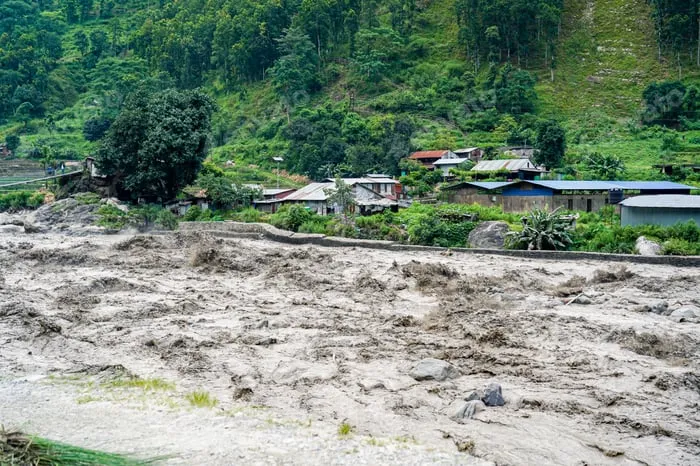

AI-powered real-time threat detection, instant emergency alerts, and coordinated response systems protecting communities across the globe.
Disasters Responded
Lives Saved
Active Volunteers
Partner Organizations

Years of Excellence
DisasterGuard is a next-generation disaster management platform combining AI-powered threat detection, real-time monitoring, and coordinated emergency response to protect communities before, during, and after disasters.
Founded in 2015, our team of experts works around the clock — monitoring seismic activity, weather patterns, and emerging threats across 4 regions to provide early warnings and rapid response coordination.
Years Active
Monitoring
Uptime
End-to-end disaster management solutions designed to protect communities, coordinate response, and accelerate recovery.
Multi-channel real-time alerts via SMS, push, email, and sirens. AI-powered threat detection with 95% accuracy within seconds.
Strategically positioned units deploy within 15 minutes. Mobile command centers, SAR teams, and medical response vehicles.
Field hospitals, mobile surgical units, and stocked pharmacies. Coordinated with 200+ hospitals for patient transfer.
Route planning, transport coordination, and shelter management. Capacity for 50,000+ displaced persons across 40+ shelters.
GIS-based vulnerability mapping, scenario modeling, and predictive analytics to identify high-risk zones before disaster strikes.
Post-disaster rebuilding, mental health support, economic revitalization, and resilience training for long-term community strength.
Stay informed with real-time disaster alerts and emergency notifications across all monitored regions.
Severe flooding expected within 4 hours. Mandatory evacuation in effect for zones 1-5.
Sustained winds of 70-80 mph expected within 12 hours. Prepare for power outages and secure outdoor objects.
Elevated fire risk due to prolonged drought. No outdoor burning permitted. Stay alert for updates.
Minor aftershocks (M2.5-3.8) continuing from Tuesday's M5.9 event. No structural damage. Tsunami risk clear.
From a small volunteer initiative to a global disaster management force — our story of growth and impact.
DisasterGuard founded by Dr. Alex Mercer and a team of emergency response experts following the devastating hurricane season of 2014.
Coordinated response to Hurricane Atlas — deployed 500+ volunteers, evacuated 12,000 residents, established 15 emergency shelters.
Launched AI-powered threat detection platform, reducing average alert time from 45 minutes to under 30 seconds across 4 regions.
Expanded operations to 12 countries, partnered with 450+ organizations, responded to 200+ disaster events in a single year.
Launch of DisasterGuard v3.0 with satellite integration, drone-based damage assessment, and real-time 3D disaster modeling.
Hear from the people and organizations who rely on DisasterGuard to keep their communities safe.
"DisasterGuard's early warning system gave our community six hours to evacuate before the flood hit. Their team was nothing short of heroic."
"As a first responder, the coordination tools are unmatched. Real-time data and seamless communication made our response three times faster than before."
"The preparedness training transformed our community's resilience. We went from being vulnerable to feeling empowered to handle any disaster."
Expert guides, preparedness tips, and community stories to help you stay informed and ready.
Essential steps every family should take before, during, and after a hurricane — from evacuation planning to emergency kit essentials.
Read ArticleA practical step-by-step guide to assembling a comprehensive emergency kit with essentials for your family without overspending.
Read ArticleLearn the correct life-saving techniques to protect yourself during an earthquake, whether you're at home, work, or outdoors.
Read ArticleJoin thousands of communities, organizations, and first responders who trust DisasterGuard for their disaster preparedness and response needs.